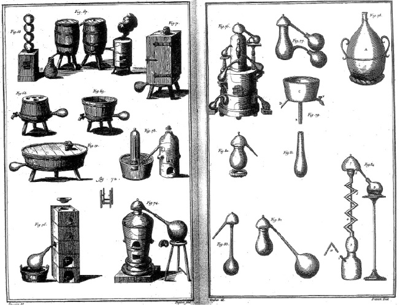

ŞEKİL 72. Çeşitli damıtma düzenekleri. Sol sayfanın sağ üst köşesinde (Fig. 71), tahta perdelerle kaplı bir sandık içine konmuş hastanın, içine tuz asiti buharı sevk edilmek suretiyle terletilerek tedavisi amacıyla kullanılan ilginç düzenek görülmektedir [Denis Diderot (1713-1784) ve Jean le Rond D’Alembert (1717-1783), Encyclopédie ou dictionnaire raisonné des sciences, des arts et des métiers (kısaca Encyclopédie) (Ansiklopedi, ya da Akla Göre Düzenlenmiş Bilimlerin, Sanatların ve Mesleklerin Açıklamalı Sözlüğü), 1751-1772].152
ECZACI OLARAK İSA
Müslüman dünyasında Hz. Muhammed’in güzel kokuyu sevmesi ve kullanımını önermesine benzer şekilde, Hıristiyan dünyasında da bizzat Hz. İsa, tüm hoşa giden kokuların kaynağı olarak görülüyordu. Üç müneccim (Magi) kral tarafından bebek İsa’ya getirilen üç armağandan ikisi (tanrısallığı simgeleyen buhur ya da günnük ile acı çekme ve ölümü simgeleyen mür), parfüm bileşenleridir. Hıristiyanlık öncesi yazılmış bir metin, kokulu kutsal yağın kökeninin, Cennet’teki özel bir ağacın, İyilik Ağacı’nın (“Tree of Mercy”) olduğunu söylemektedir. Bu ağaçtan elde edildiği söylenen kutsal mesh yağına İsa’nın kutsal salyası gözüyle bakılmıştır. Kutsal yağlama, Roma Katolik kilisesine göre, ağır hasta olan birinin bir rahip tarafından, kutsanmış yağla yağlanarak kutsanmasıdır. Kudüs’teki İsa’nın kabri önünde yanan kandillerin yağı, Ortaçağda Hıristiyan hacıların elde etmeye ve geri dönüşlerinde getirmeye çalıştıkları değerli bir kutsal nesne idi. Mesh etmek, kutsal yağ ile ovmak anlamına gelir. Türkçe’de Hz. İsa için kullanılan “Mesih” adı, İbranice “kutsal yağ” anlamına gelen “Machiah” sözcüğünden gelir ve “Mesih” sözcüğü, Hz. İsa’nın özgün adı olan “Khristos”un Arapça’daki tam karşılığı olup “kutsal yağ ile ovulmuş kimse” anlamındadır.
El uygulaması ile yapılan tedaviler çok eskiden beri uygulanmaktadır. Hz. İsa’nın değişik dertlerden ıstırap çeken insanlara sağ elini uzatarak onlara şifa dağıttığı, kutsal metinlerde yazılıdır. El ile şifa bahşetme yeteneği, daha sonraları Fransız ve İngiliz krallarına yakıştırılmış; kralların, boyunlarında yara taşıyan sıracalı (“scrofulie“, adenit tüberküloz) ya da saralı (epileptik) hastalara dokunmakla onları şifaya kavuşturacaklarına inanılmıştır.
Barok çağının en çok sevilen dinsel alegorilerinden biri, Hz. İsa’yı “göksel eczane” içinde betimlemekti. 17. yüzyıldan itibaren, “Theologica mystica” ve “Pharmacia religiosa”nın ender meyveleri olarak “Eczacı İsa” motifli resimler görülmeye başlanmıştır.37 Göksel farmakopelerdeki (“pharmacopoeus coelestis”) tabloların çoğunda, bu sahne işlenmiştir (ŞEKİL 73, ŞEKİL 74, ŞEKİL 75). Onulmaz hastalıklarda insanların en büyük gereksinimi, Tanrı’nın yardımı olmuştur. “Göksel Hekim” yapısının anlaşılır özel bir ifadesini arayan halk sanatı, İsa’yı hekim olarak değil de eczanede ilaç hazırlayan eczacı olarak betimlemiştir. “Göksel Hekim” olarak İsa’nın bilinen en eski grafiksel sunumu, 1525 yılı dolayına tarihlenen bir elyazmasında yer alır. İsa’nın el terazisi ile eczacı olarak ilk betimi ise 1619 tarihlidir. Bunun en erken örneklerinden biri de 1626’da yazımına başlanan Nürnberg’li berber-cerrahların yemin kitabında yer almaktadır. Bu konudaki resimlerden bugüne dek yetmişi aşkın betimin varlığı saptanmıştır.147